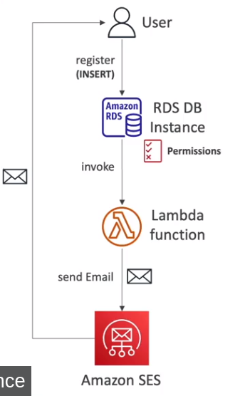

🌿 What?
- Là một dịch vụ tÃnh toán không máy chủ được cung cấp bởi AWS.
- Cho phép run code mà không cần chúng ta phải cung cấp hay quản lý servers.
🌿 Why?
- Virtual Functions - không cần quản lý server.
- Giới hạn thá»i gian excute
- Run on-demand(chạy theo yêu cầu), có yêu cầu gá»i đến thì mới chạy. Còn như EC2 là chạy bất kể ngà y đêm, chỉ trừ khi chúng tắt
- Tự động mở rộng một cách mượt mà , không giống EC2 phải xóa add/remove servers
🌿 Benefits of AWS Lambda
- Dễ dà ng thanh toán:
- Trả theo từng request và thá»i gian compute
- Free tier cung cấp 1,000,000 AWS Lambda requests và 400,000 GBs thá»i gian compute
- TÃch hợp được với toà n bộ các services của AWS.
- TÃch hợp được với nhiá»u ngôn ngữ láºp trình.
- Dễ dà ng giám sát chỉ số thông qua AWS CloudWatch
- Dễ dà ng lấy thêm tà i nguyên cho từng funtions(up to 10GB RAM)
- Khi tăng RAM tự động cũng sẽ phát triển cả CPU và network!
🌿 Language support
- Node
- Python
- Java(tÆ°Æ¡ng thÃch Java 8)
- C#(.NET Core)
- Golang
- C# / Powershell
- Ruby
- Custom Runtime API
- Lambda Container Image
🌿 Pricing
- Pay per calls:
- 1,000,000 requests đầu tiên sẽ được miá»…n phÃ.
- 0.2$ cho mỗi 1,000,000 requests tiếp theo.
- Pay per duration:
- 400,000 GB-seconds thá»i gian tÃnh toán trong một tháng - free
- = 400,000 seconds ứng với function là 1GB RAM.
- = 3,200,000 seconds ứng với 1288 MB RAM
- Rất rẻ để chạy AWS Lambda nên nó rất rất phổ biến!
🌿 Invoking from RDS & Aurora
-
Trong thực tế, có những trường hợp chúng ta cần gá»i Lambda Funtions từ trong DB instance để thực hiện một tác vụ gì đó (và dụ như khi người dùng insert một bản ghi và o RDS -> RDS gá»i Lambda để Lambda gá»i email xác nháºn tới người dùng)
-
Cho phép chúng ta thực hiện các data events từ trong một databases.
-
Hỗ trợ với RDS for PostgreSQL và Aurora MySQL.
-
Phải cho phép outbound traffic của DB instance tới Lambda function.
-
DB instance cần phải yêu cầu quyá»n để gá»i Lambda funtion.(Lambda Resource-based Policy & IAM Policy) 
-
RDS Event Notifications
- Chỉ gá»i event vá» trạng thái hoạt Ä‘á»™ng của database(created, stopped, start,…), sẽ không gá»i thông tin vá» dữ liệu.
- Đăng ký để theo dõi các event của: DB Instance, DB snapshot, DB Parameter Group, DB Security Group, RDS Proxy, Custom Engine Version.
- Gần với thá»i gian thực(cháºm nhất là 5p có thông báo)